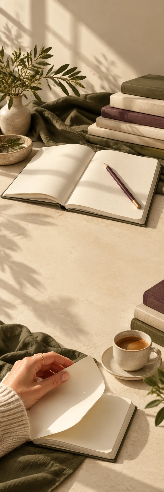

FOLIO
StationeryCollectie-edit
FOLIO / ROOM FOR A NEW CHAPTER
Sla eens
een andere bladzij om.
Bekijk de papier-edit FOLIO / VAN DICHTBIJ
Voor wat
nog niet vastligt.
Een lege pagina. De rug van een nieuw boek. Een gedachte die je wilt bewaren. Ontdek onze lees- en schrijfedit voor een middag zonder eindpunt.
01Lezen
02Krabbelen
03Blijven hangen
Het volgende
hoofdstuk is van jou.
Iets om in te verdwijnen. Of zelf te beginnen.
Bekijk de papier-edit